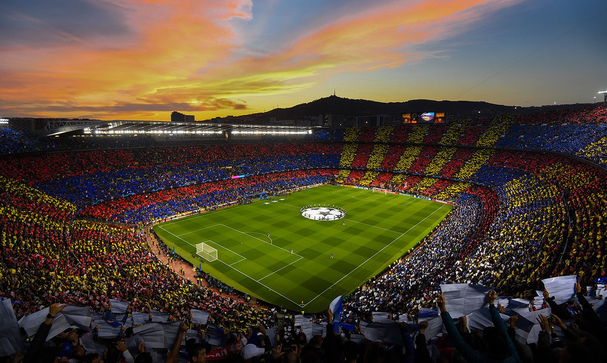

Football, also called association football or soccer, game in which two teams of 11 players, using any part of their bodies except their hands and arms, try to maneuver the ball into the opposing team’s goal. Only the goalkeeper is permitted to handle the ball and may do so only within the penalty area surrounding the goal. The team that scores more goals wins. Football is the world’s most popular ball game in numbers of participants and spectators. Simple in its principal rules and essential equipment, the sport can be played almost anywhere, from official football playing fields (pitches) to gymnasiums, streets, school playgrounds, parks, or beaches. Football’s governing body, the Fédération Internationale de Football Association (FIFA), estimated that at the turn of the 21st century there were approximately 250 million football players and over 1.3 billion people “interested” in football; in 2010 a combined television audience of more than 26 billion watched football’s premier tournament, the quadrennial month-long World Cup finals. For a history of the origins of football sport, see football.
Lionel Messi, in full Lionel Andrés Messi, also called Leo Messi, (born June 24, 1987, Rosario, Argentina), Argentine-born football (soccer) player who received a record-setting seven Ballon d’Or awards as the world’s top male player (2009–12, 2015, 2019, and 2021). In 2022 he helped Argentina win the Fédération Internationale de Football Association (FIFA)’s World Cup.
Cristiano Ronaldo, in full Cristiano Ronaldo dos Santos Aveiro, (born February 5, 1985, Funchal, Madeira, Portugal), Portuguese football (soccer) forward who was one of the greatest players of his generation.
Zinedine Zidane, byname Zizou, (born June 23, 1972, Marseille, France), French football (soccer) player who led his country to victories in the 1998 World Cup and the 2000 European Championship. He later found success as a manager.
Diego Maradona, in full Diego Armando Maradona, (born October 30, 1960, Lanus, Buenos Aires, Argentina—died November 25, 2020, Tigre, Buenos Aires), Argentine football (soccer) player who is generally regarded as the top footballer of the 1980s and one of the greatest of all time. Renowned for his ability to control the ball and create scoring opportunities for himself and others, he led club teams to championships in Argentina, Italy, and Spain, and he starred on the Argentine national team that won the 1986 World Cup.
Pelé, byname of Edson Arantes do Nascimento, (born October 23, 1940, Três Corações, Brazil—died December 29, 2022, São Paolo, Brazil), Brazilian football (soccer) player, in his time probably the most famous and possibly the best-paid athlete in the world. He was part of the Brazilian national teams that won three World Cup championships (1958, 1962, and 1970).